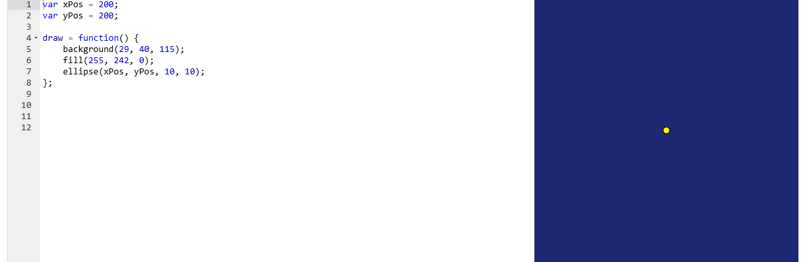

Estrella en el cielo nocturno
Una estrella amarilla dibujada con un círculo pequeño sobre un fondo azul noche. Su posición no está escrita en números sueltos, sino en dos variables, xPos e yPos: es la base para animar la estrella en los siguientes pasos.
Resultado
Código
Código del proyecto de Khan Academy. En js/estrella.js está adaptado a p5.js para funcionar en una página web.
var xPos = 200;
var yPos = 200;
draw = function() {
background(29, 40, 115);
fill(255, 242, 0);
ellipse(xPos, yPos, 10, 10);
};En p5.js draw se declara como function draw() y el lienzo se crea en setup(). Los botones solo cambian xPos e yPos; el dibujo se actualiza porque draw() se repite.
Conceptos que se practican
| Elemento | Qué hace |
|---|---|
var xPos, var yPos | Guardan la posición de la estrella. Al estar fuera de draw() conservan su valor entre fotogramas y se pueden cambiar sin tocar el dibujo (prueba el botón de arriba). |
background(29, 40, 115) | Pinta el cielo azul noche. Está dentro de draw(), así que borra el fotograma anterior en cada vuelta. |
fill(255, 242, 0) | Color de relleno amarillo para la estrella; se aplica a las figuras que se dibujen después. |
ellipse(xPos, yPos, 10, 10) | Un círculo de 10 × 10 píxeles centrado en (xPos, yPos). Es la estrella; con (200, 200) queda en el centro del lienzo. |
Orden de dibujo | Primero el fondo y después la estrella. Si background() se llamara al final, taparía la estrella. |
Captura del editor original
